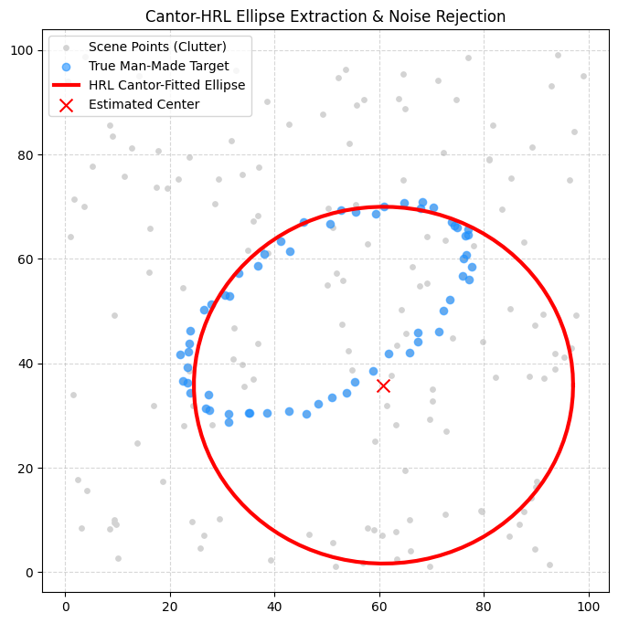

2028PREZ
Patriotic 2028 campaign concept poster featuring Tara Palmeri and Michael Emanuel Glover.
Open PNG ↗October 26, 2026 · 35 files
New: explore the improved ellipse detector and measured comparison →
Chess research, working prototypes, computer vision experiments, and an illustrated gallery from the latest collection.
The papers preserve their authors’ research proposals and claims. See the RelaxFish implementation report for tested behavior and limitations. The nine RelaxFish tests passed during archiving; the vision notebooks have not been executed as part of this collection.
Contact Michael by emailPatriotic 2028 campaign concept poster featuring Tara Palmeri and Michael Emanuel Glover.
Open PNG ↗
A celestial creator above an illuminated world and paradise landscape.
Open PNG ↗
A celestial Mother Earth figure with a globe, water, and living landscapes.
Open PNG ↗
Three-panel cosmic artwork labeled Mother God, Cosmic Christ, and Father God.
Open PNG ↗
Cosmic Christ imagery in a luminous neon cathedral.
Open PNG ↗
Neon spiritual triptych depicting Mother God, Cosmic Christ, and Father God.
Open PNG ↗

Cantor-HRL ellipse extraction plot comparing a fitted ellipse with a synthetic target amid noise.
Open PNG ↗Synthetic ellipse detection experiment using hierarchical relaxation labeling and Cantor-style subdivision.
Open IPYNB ↗Ellipse detection experiment incorporating rotation and unequal axis lengths.
Open IPYNB ↗Webcam experiment using a RAM frame buffer and event-triggered recording.
Open IPYNB ↗Research proposal framing physical unification as compatibility between models at different scales.
Open PDF ↗Chess research paper on lattice projections, algebraic ray interdiction, and topological constraint propagation.
Open PDF ↗RelaxFish paper on continuous constraints, superposition, and nonlinear convergence.
Open PDF ↗RelaxFish architecture paper covering HRL and tactical role superposition.
Open PDF ↗Distributed tactical-role analysis of chess positions. Cleaned demonstration using the shared Python module.
Open IPYNB ↗Piece-to-role and role-to-piece tactical distributions. Cleaned demonstration using the shared Python module.
Open IPYNB ↗Classical complex-amplitude experiment for tactical role probabilities. Cleaned demonstration using the shared Python module.
Open IPYNB ↗Chess movement matrices and a contextual subboard ledger. Cleaned demonstration using the shared Python module.
Open IPYNB ↗Distributed tactical-role analysis of chess positions. Preserved original supplied version.
Open IPYNB ↗Searchable text extraction of the RelaxFish convergence paper.
Open TXT ↗Searchable text extraction of the RelaxFish architecture paper.
Open TXT ↗Piece-to-role and role-to-piece tactical distributions. Preserved original supplied version.
Open IPYNB ↗Classical complex-amplitude experiment for tactical role probabilities. Preserved original supplied version.
Open IPYNB ↗Chess movement matrices and a contextual subboard ledger. Preserved original supplied version.
Open IPYNB ↗Records the first illegal or invalid move token in each source paper’s game sequence.
Open JSON ↗